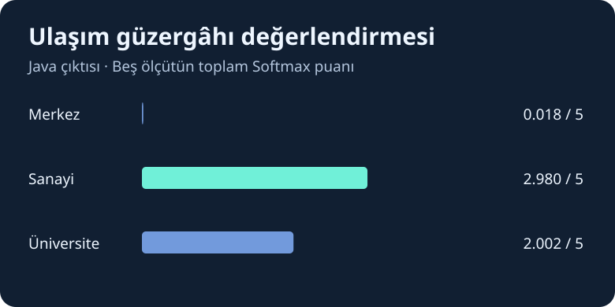

Transport Route Planner
Salt okunur demo. Üç sentetik senaryo özgün Java uygulamasıyla önceden hesaplandı. Gerçek güzergâh veya belediye verisi kullanılmadı.

Java program çıktısı
Mahalle Kriterleri ve Ağırlıkları:
-----------------------------------------------------------
Mahalle Nüfus Ulaşım Maliyet Çevresel Sosyal
Merkez 736.00 5.00 585.00 54.00 35.00
Sanayi 754.00 9.00 249.00 60.00 39.00
Üniversite 700.00 3.00 308.00 21.00 50.00
Softmax Ağırlıkları:
Merkez 0.0000 0.0179 0.0000 0.0000 0.0000
Sanayi 1.0000 0.9796 1.0000 0.0000 0.0000
Üniversite 0.0000 0.0024 0.0000 1.0000 1.0000
En uygun mahalle: Sanayi
Kaynak kodunu ve çalıştırma adımlarını aç ↗